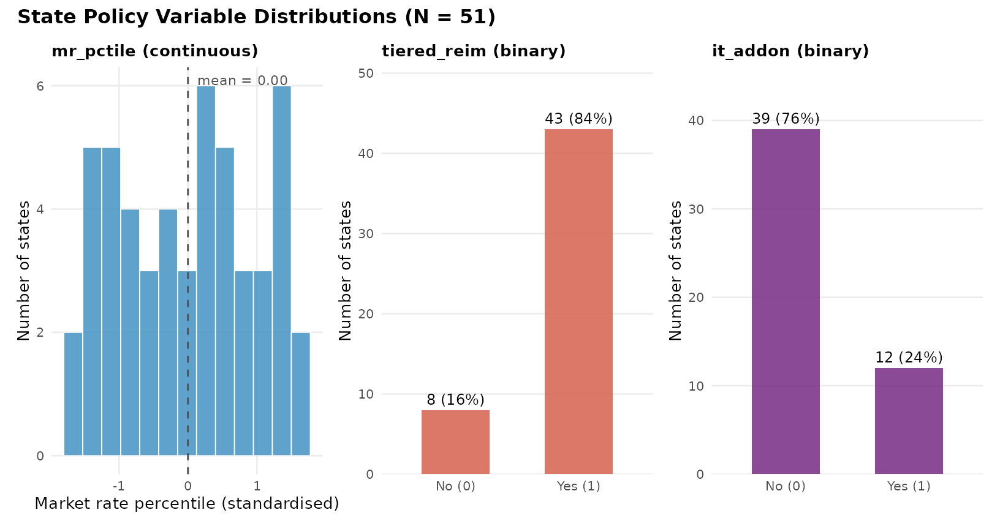
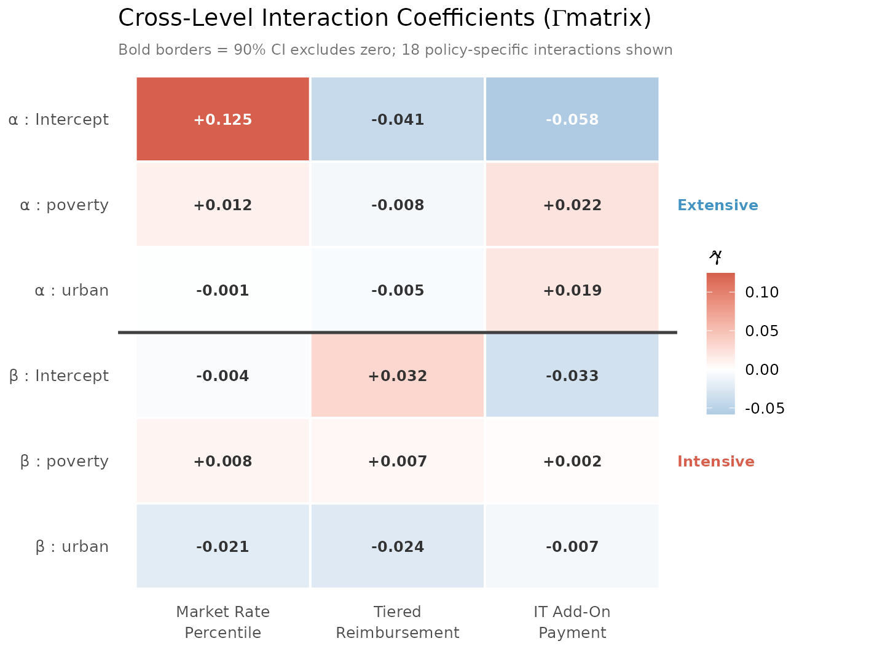
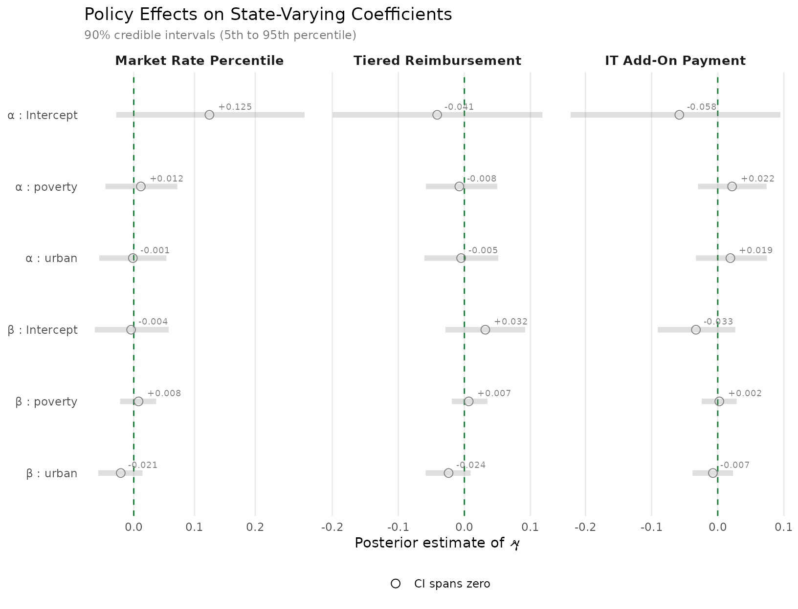
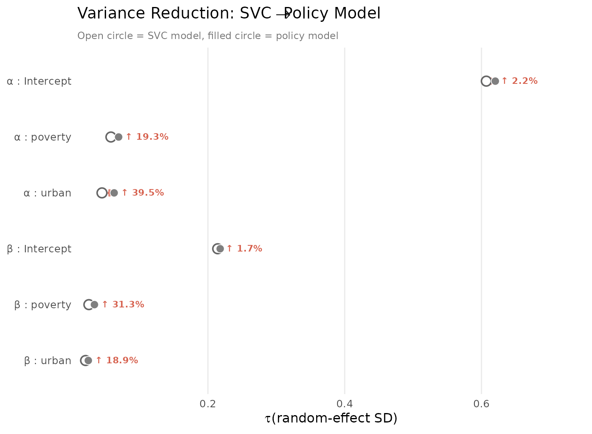

Policy Moderators
JoonHo Lee
2026-02-27
Source:vignettes/04-policy-moderators.Rmd
04-policy-moderators.RmdOverview
The State-Varying Coefficients vignette demonstrated that states differ in how covariates relate to IT enrolment. The parameters quantified the magnitude of this heterogeneity, and the caterpillar plots showed which states deviate most from the national average. But the SVC model leaves a fundamental question unanswered: why do states differ?
Policy moderators answer this by decomposing each state’s deviation into a policy-explained component () and a residual (). A non-zero coefficient means that a policy variable systematically shifts a state’s regression coefficient — connecting the SVC model to the substantive question: do childcare subsidy policies moderate the poverty reversal?
In this vignette you will learn how to:
- Understand the three policy variables in the package and their substantive rationale.
- Formulate the cross-level model mathematically.
-
Specify a policy moderator model using the
state_level()formula syntax. - Interpret the coefficients — the main results of this analysis.
- Compare residual values to the pure SVC model to assess how much state variation is explained by policies.
- Evaluate the policy model via LOO-CV.
The Policy Variables
The package provides nsece_state_policy, a data frame
with 51 rows (one per state) and three policy variables drawn from the
Child Care and Development Fund (CCDF) program:
data("nsece_state_policy", package = "hurdlebb")
str(nsece_state_policy)
#> 'data.frame': 51 obs. of 5 variables:
#> $ state_id : int 1 2 3 4 5 6 7 8 9 10 ...
#> $ state_name : chr "State_01" "State_02" "State_03" "State_04" ...
#> $ mr_pctile : num 0.215 -1.248 -1.373 1.636 0.591 ...
#> $ tiered_reim: int 1 0 1 1 0 1 1 0 1 1 ...
#> $ it_addon : int 0 0 0 1 0 1 0 0 1 1 ...
cat("States:", nrow(nsece_state_policy), "\n")
#> States: 51
cat("Market rate pctile (mean, SD):",
round(mean(nsece_state_policy$mr_pctile), 2), ",",
round(sd(nsece_state_policy$mr_pctile), 2), "\n")
#> Market rate pctile (mean, SD): 0 , 1
cat("Tiered reimbursement:",
round(mean(nsece_state_policy$tiered_reim), 2), "\n")
#> Tiered reimbursement: 0.84
cat("IT add-on:",
round(mean(nsece_state_policy$it_addon), 2), "\n")
#> IT add-on: 0.24Each variable captures a distinct dimension of state subsidy policy:
| Variable | Type | Description |
|---|---|---|
mr_pctile |
Continuous (standardised) | CCDF market rate survey percentile. Higher values mean more generous reimbursement ceilings. |
tiered_reim |
Binary (0/1) | Whether the state uses quality-differentiated (tiered) reimbursement rates. |
it_addon |
Binary (0/1) | Whether the state provides a supplemental add-on payment for infant/toddler care. |
Market rate percentile (mr_pctile).
Federal guidance recommends that states set CCDF reimbursement rates at
or above the 75th percentile of local market rates. Higher values mean
providers are compensated closer to private-market prices, reducing
disincentives to accept subsidised children. Standardised to mean 0, SD
1 for MCMC efficiency.
Tiered reimbursement (tiered_reim).
States that pay higher rates to providers meeting quality standards.
This may differentially affect centres serving IT children, who require
more intensive staffing.
IT add-on (it_addon). A supplemental
payment for infant/toddler care, recognising that lower staff-to-child
ratios make younger children costlier to serve. This is the most
targeted policy instrument — it directly addresses the cost barrier
central to the poverty reversal.
Visualising the Policy Landscape
Before fitting the model, it is useful to see how the three policy variables are distributed across the 51 states. This context helps interpret the coefficients later — a variable with limited variation across states provides less statistical leverage to detect a moderating effect.
if (requireNamespace("ggplot2", quietly = TRUE)) {
library(ggplot2)
pol <- nsece_state_policy
# --- Panel 1: mr_pctile histogram ---
mr_mean <- mean(pol$mr_pctile)
p1 <- ggplot(pol, aes(x = mr_pctile)) +
geom_histogram(bins = 13, fill = pal["extensive"], colour = "white",
alpha = 0.85, linewidth = 0.3) +
geom_vline(xintercept = mr_mean, linetype = "dashed",
colour = "grey30", linewidth = 0.5) +
annotate("text", x = mr_mean, y = Inf,
label = sprintf("mean = %.2f", mr_mean),
vjust = 1.8, hjust = -0.1, size = 3, colour = "grey30") +
labs(x = "Market rate percentile (standardised)",
y = "Number of states",
subtitle = "mr_pctile (continuous)") +
theme_minimal(base_size = 10) +
theme(panel.grid.minor = element_blank(),
plot.subtitle = element_text(face = "bold", size = 10))
# --- Panel 2: tiered_reim bar chart ---
tiered_tbl <- data.frame(
status = factor(c("No (0)", "Yes (1)"), levels = c("No (0)", "Yes (1)")),
count = c(sum(pol$tiered_reim == 0), sum(pol$tiered_reim == 1))
)
p2 <- ggplot(tiered_tbl, aes(x = status, y = count)) +
geom_col(fill = pal["intensive"], alpha = 0.85, width = 0.55) +
geom_text(aes(label = paste0(count, " (",
round(100 * count / sum(count)), "%)")),
vjust = -0.5, size = 3.2) +
labs(x = NULL, y = "Number of states",
subtitle = "tiered_reim (binary)") +
scale_y_continuous(expand = expansion(mult = c(0, 0.18))) +
theme_minimal(base_size = 10) +
theme(panel.grid.minor = element_blank(),
panel.grid.major.x = element_blank(),
plot.subtitle = element_text(face = "bold", size = 10))
# --- Panel 3: it_addon bar chart ---
addon_tbl <- data.frame(
status = factor(c("No (0)", "Yes (1)"), levels = c("No (0)", "Yes (1)")),
count = c(sum(pol$it_addon == 0), sum(pol$it_addon == 1))
)
p3 <- ggplot(addon_tbl, aes(x = status, y = count)) +
geom_col(fill = pal["dispersion"], alpha = 0.85, width = 0.55) +
geom_text(aes(label = paste0(count, " (",
round(100 * count / sum(count)), "%)")),
vjust = -0.5, size = 3.2) +
labs(x = NULL, y = "Number of states",
subtitle = "it_addon (binary)") +
scale_y_continuous(expand = expansion(mult = c(0, 0.18))) +
theme_minimal(base_size = 10) +
theme(panel.grid.minor = element_blank(),
panel.grid.major.x = element_blank(),
plot.subtitle = element_text(face = "bold", size = 10))
# --- Combine ---
if (requireNamespace("patchwork", quietly = TRUE)) {
library(patchwork)
(p1 + p2 + p3) +
plot_annotation(
title = "State Policy Variable Distributions (N = 51)",
theme = theme(plot.title = element_text(face = "bold", size = 12))
)
} else if (requireNamespace("gridExtra", quietly = TRUE)) {
gridExtra::grid.arrange(p1, p2, p3, ncol = 3)
} else {
print(p1)
}
}
Distribution of the three policy variables across 51 states. Left: CCDF market rate percentile (continuous, standardised). Centre: tiered reimbursement (binary, 84 percent prevalence). Right: IT add-on payment (binary, 24 percent prevalence). The heavy skew in tiered reimbursement limits statistical power for that moderator.
Several features are worth noting:
- Market rate percentile spans the full standardised range with adequate spread, providing good statistical leverage for detecting moderation.
- Tiered reimbursement is heavily skewed (approximately 84% adoption), leaving few states in the “No” group. Gamma estimates for this moderator will be less precise.
- IT add-on (approximately 24% adoption) provides a more balanced contrast, making it the most informative binary moderator in terms of statistical power.
The Cross-Level Model
In the SVC model from the previous vignette, the state random effects followed:
The policy moderator model replaces this with a conditional mean structure:
where:
- is the policy vector for state . The leading 1 allows each random-effect dimension to have its own residual intercept.
- is the cross-level coefficient matrix. Each entry tells us how policy variable shifts the -th random-effect dimension.
- is the residual state deviation — the part of state heterogeneity not explained by the observed policy variables.
- is the residual covariance among the random effects after conditioning on policies.
With and , is a matrix (24 elements). Rows are random-effect dimensions; columns are policy variables.
Example. If (row: -poverty, column: IT add-on), then states with IT add-ons have a less negative poverty effect on participation — the add-on mitigates the poverty barrier.
The total variance decomposes as , separating policy-explained from residual variance.
Formula Syntax
In hurdlebb, policy moderators are specified using
the state_level() function within the model formula, and
the state-level data is passed through the state_data
argument:
# This is the code you would run (takes ~60-90 minutes on full data):
fit_policy <- hbb(
y | trials(n_trial) ~ poverty + urban +
(poverty + urban | state_id) +
state_level(mr_pctile + tiered_reim + it_addon),
data = nsece_synth,
state_data = nsece_state_policy,
weights = "weight",
stratum = "stratum",
psu = "psu",
chains = 4,
seed = 42
)Key points:
-
state_level()adds the matrix. The policy names insidestate_level()are looked up instate_data. An intercept column is auto-prepended, producing a matrix . -
state_datais required. Policy variables live in a separate data frame (one row per state), linked viastate_id. -
Random effects persist. The
(poverty + urban | state_id)term remains; policy moderators explain part of the random-effect variation, not replace it. - Survey weights compose cleanly — identical to previous vignettes.
- Runtime. Expect 60–90 minutes (24 extra parameters).
Loading Pre-computed Results
As with previous vignettes, we load saved output to avoid lengthy MCMC runs:
results <- readRDS(find_extdata("vig04_results.rds"))The print() method gives a compact overview:
cat(paste(results$print_text, collapse = "\n"))
#> Hurdle Beta-Binomial Model Fit
#> ==============================
#>
#> Model type : SVC (state-varying coefficients, unweighted)
#> Stan model : hbb_svc
#> Formula : y | trials(n_trial) ~ poverty + urban + (poverty + urban | state_id) + state_level(mr_pctile +
#> tiered_reim + it_addon)
#>
#> Observations (N) : 6785
#> Covariates (P) : 3 (intercept + 2 predictors)
#> Groups (S) : 51
#> Policy vars (Q) : 4
#> RE dimension (K) : 6
#> Zero rate : 0.354
#> Survey weights : no
#>
#> MCMC:
#> Chains : 4
#> Warmup : 1000
#> Sampling : 1000
#> Total draws : 4000
#> Elapsed : 58.0 minutes
#>
#> Diagnostics:
#> Divergent transitions : 0 [OK]
#> Max treedepth hits : 0 [OK]
#> E-BFMI : 0.762, 0.811, 0.8, 0.761
#> Max Rhat : 1.0122 [WARNING]
#> Min bulk ESS : 388 [LOW]
#> Min tail ESS : 911 [OK]
#>
#> Use summary() for parameter estimates.Model Summary
The fixed effects represent population-average coefficients after accounting for state random effects and policy moderators:
cat(paste(results$summary_text, collapse = "\n"))
#>
#> ============================================================
#> Hurdle Beta-Binomial Model Summary
#> ============================================================
#>
#> Model type : SVC (state-varying coefficients)
#> Formula : y | trials(n_trial) ~ poverty + urban + (poverty + urban | state_id) + state_level(mr_pctile + tiered_reim + it_addon)
#> Observations : 6785
#> States (S) : 51
#> Zero rate : 35.4%
#> Inference : Posterior (MCMC)
#> Level : 0.95
#>
#> --------------------------------------------------
#> Extensive Margin (alpha)
#> --------------------------------------------------
#> Parameter Estimate SE CI_lower CI_upper Rhat ESS
#> alpha_(Intercept) 0.514 0.911 -1.300 2.327 1.0009 5420
#> alpha_poverty -0.151 0.874 -1.799 1.537 1.0010 6441
#> alpha_urban 0.218 0.898 -1.534 1.935 1.0017 6407
#>
#> --------------------------------------------------
#> Intensive Margin (beta)
#> --------------------------------------------------
#> Parameter Estimate SE CI_lower CI_upper Rhat ESS
#> beta_(Intercept) -0.029 0.889 -1.739 1.747 1.0006 5888
#> beta_poverty 0.058 0.906 -1.757 1.823 1.0015 6382
#> beta_urban -0.007 0.865 -1.682 1.691 1.0014 5483
#>
#> --------------------------------------------------
#> Dispersion
#> --------------------------------------------------
#> kappa = 5.262 (log_kappa = 1.660, SE = 0.024)
#> kappa 95% CI: [5.019, 5.512]
#>
#> --------------------------------------------------
#> Random Effects (tau)
#> --------------------------------------------------
#> tau_alpha_(Intercept) 0.620
#> tau_alpha_poverty 0.069
#> tau_alpha_urban 0.063
#> tau_beta_(Intercept) 0.218
#> tau_beta_poverty 0.034
#> tau_beta_urban 0.025
#>
#> --------------------------------------------------
#> MCMC Diagnostics
#> --------------------------------------------------
#> Divergent transitions : 0 [OK]
#> Max treedepth hits : 0 [OK]
#> E-BFMI : 0.762, 0.811, 0.8, 0.761 [OK]
#> Max Rhat : 1.012 [WARNING]
#> Min ESS (bulk) : 388.1 [LOW]
#> Min ESS (tail) : 911 [OK]Fixed effects
results$coef_both
#> alpha_(Intercept) alpha_poverty alpha_urban beta_(Intercept)
#> 0.514180397 -0.150632968 0.217831365 -0.028791051
#> beta_poverty beta_urban log_kappa
#> 0.057688162 -0.007086381 1.660477988The poverty reversal persists:
cat(sprintf("Extensive margin (alpha_poverty): %+.3f\n",
results$coef_both["alpha_poverty"]))
#> Extensive margin (alpha_poverty): -0.151
cat(sprintf("Intensive margin (beta_poverty): %+.3f\n",
results$coef_both["beta_poverty"]))
#> Intensive margin (beta_poverty): +0.058This is expected: the matrix operates on the random effects, not the fixed effects. explains variation in how states deviate from the population-average and .
Gamma Coefficients: The Main Results
The
matrix is the centrepiece of this analysis. Each entry tells us how a
state-level policy variable shifts a particular random-effect dimension.
The gamma_table contains all 24 entries with posterior
summaries:
gt <- results$gamma_table
knitr::kable(
gt[, c("parameter", "policy", "margin", "estimate", "sd",
"ci_lower", "ci_upper", "rhat", "ess_bulk")],
digits = 3,
align = c("l", "l", "l", rep("r", 6)),
caption = "Gamma coefficients: cross-level policy effects on state-varying parameters. 90% credible intervals (5th and 95th percentiles)."
)| parameter | policy | margin | estimate | sd | ci_lower | ci_upper | rhat | ess_bulk |
|---|---|---|---|---|---|---|---|---|
| alpha_(Intercept) | intercept | extensive | 0.123 | 0.907 | -1.376 | 1.617 | 1.001 | 5586.670 |
| alpha_poverty | intercept | extensive | -0.029 | 0.875 | -1.478 | 1.382 | 1.001 | 6387.729 |
| alpha_urban | intercept | extensive | 0.043 | 0.898 | -1.409 | 1.517 | 1.002 | 6407.475 |
| beta_(Intercept) | intercept | intensive | -0.007 | 0.888 | -1.482 | 1.453 | 1.000 | 5917.167 |
| beta_poverty | intercept | intensive | 0.016 | 0.905 | -1.470 | 1.546 | 1.001 | 6389.329 |
| beta_urban | intercept | intensive | -0.004 | 0.865 | -1.439 | 1.401 | 1.001 | 5506.419 |
| alpha_(Intercept) | mr_pctile | extensive | 0.125 | 0.095 | -0.029 | 0.281 | 1.004 | 1549.442 |
| alpha_poverty | mr_pctile | extensive | 0.012 | 0.036 | -0.047 | 0.072 | 1.000 | 6006.901 |
| alpha_urban | mr_pctile | extensive | -0.001 | 0.034 | -0.057 | 0.054 | 1.002 | 6692.537 |
| beta_(Intercept) | mr_pctile | intensive | -0.004 | 0.037 | -0.064 | 0.058 | 1.001 | 3728.728 |
| beta_poverty | mr_pctile | intensive | 0.008 | 0.018 | -0.022 | 0.037 | 1.000 | 6760.969 |
| beta_urban | mr_pctile | intensive | -0.021 | 0.022 | -0.058 | 0.015 | 1.001 | 7029.091 |
| alpha_(Intercept) | tiered_reim | extensive | -0.041 | 0.099 | -0.199 | 0.118 | 1.002 | 2177.740 |
| alpha_poverty | tiered_reim | extensive | -0.008 | 0.033 | -0.058 | 0.050 | 1.001 | 3372.824 |
| alpha_urban | tiered_reim | extensive | -0.005 | 0.034 | -0.061 | 0.051 | 1.000 | 4587.179 |
| beta_(Intercept) | tiered_reim | intensive | 0.032 | 0.036 | -0.029 | 0.092 | 1.001 | 3480.386 |
| beta_poverty | tiered_reim | intensive | 0.007 | 0.016 | -0.019 | 0.035 | 1.000 | 6430.237 |
| beta_urban | tiered_reim | intensive | -0.024 | 0.021 | -0.059 | 0.009 | 1.002 | 7763.098 |
| alpha_(Intercept) | it_addon | extensive | -0.058 | 0.097 | -0.223 | 0.095 | 1.001 | 1726.899 |
| alpha_poverty | it_addon | extensive | 0.022 | 0.032 | -0.030 | 0.074 | 1.001 | 7647.864 |
| alpha_urban | it_addon | extensive | 0.019 | 0.033 | -0.033 | 0.074 | 1.001 | 5075.073 |
| beta_(Intercept) | it_addon | intensive | -0.033 | 0.036 | -0.091 | 0.027 | 1.001 | 3345.750 |
| beta_poverty | it_addon | intensive | 0.002 | 0.016 | -0.024 | 0.029 | 1.001 | 6987.799 |
| beta_urban | it_addon | intensive | -0.007 | 0.019 | -0.038 | 0.023 | 1.001 | 7327.368 |
Each row is one element. A credible interval excluding zero indicates that the policy variable has a discernible effect on that random-effect dimension.
Gamma Heatmap
The heatmap provides a compact, publication-quality summary of all 18 cross-level interaction effects (6 parameters 3 policy variables, excluding the intercept column of which is a nuisance parameter). Row grouping by margin immediately reveals whether policy moderation operates differently on participation versus intensity.
if (requireNamespace("ggplot2", quietly = TRUE)) {
library(ggplot2)
gt <- results$gamma_table
# Filter to non-intercept policy columns (the substantive interactions)
# gamma_table$policy values: "intercept", "mr_pctile", "tiered_reim", "it_addon"
gt_pol <- gt[gt$policy != "intercept", ]
# Create display labels from the 'parameter' column
# parameter format: "alpha_(Intercept)", "alpha_poverty", "alpha_urban",
# "beta_(Intercept)", "beta_poverty", "beta_urban"
gt_pol$re_label <- gsub("^alpha_", "\u03b1 : ", gt_pol$parameter)
gt_pol$re_label <- gsub("^beta_", "\u03b2 : ", gt_pol$re_label)
gt_pol$re_label <- gsub("\\(Intercept\\)", "Intercept", gt_pol$re_label)
# Fixed ordering: extensive (top) then intensive (bottom)
param_order <- c(
"\u03b1 : Intercept", "\u03b1 : poverty", "\u03b1 : urban",
"\u03b2 : Intercept", "\u03b2 : poverty", "\u03b2 : urban"
)
gt_pol$re_label <- factor(gt_pol$re_label, levels = rev(param_order))
# Readable policy axis labels
policy_labels <- c(
"mr_pctile" = "Market Rate\nPercentile",
"tiered_reim" = "Tiered\nReimbursement",
"it_addon" = "IT Add-On\nPayment"
)
gt_pol$policy_label <- factor(
policy_labels[gt_pol$policy],
levels = unname(policy_labels)
)
# Dynamic text colour: white on strongly coloured tiles
max_abs <- max(abs(gt_pol$estimate), na.rm = TRUE)
gt_pol$text_col <- ifelse(
abs(gt_pol$estimate) > max_abs * 0.45,
"white", "grey20"
)
# Significance flag (90% CI excludes zero)
gt_pol$significant <- (gt_pol$ci_lower > 0) | (gt_pol$ci_upper < 0)
ggplot(gt_pol, aes(x = policy_label, y = re_label, fill = estimate)) +
geom_tile(colour = "white", linewidth = 0.7) +
# Bold outline for significant coefficients
geom_tile(data = gt_pol[gt_pol$significant, ],
aes(x = policy_label, y = re_label),
fill = NA, colour = "black", linewidth = 1.2) +
# Signed point estimates
geom_text(aes(label = sprintf("%+.3f", estimate),
colour = text_col),
size = 3.2, fontface = "bold", show.legend = FALSE) +
scale_fill_gradient2(
low = pal["extensive"],
mid = "white",
high = pal["intensive"],
midpoint = 0,
name = expression(hat(gamma))
) +
scale_colour_identity() +
# Heavy line separating extensive / intensive blocks
geom_hline(yintercept = 3.5, colour = "grey25", linewidth = 0.9) +
# Margin block labels
annotate("text", x = 3.6, y = 5, label = "Extensive",
size = 3.2, fontface = "bold", colour = pal["extensive"],
hjust = 0) +
annotate("text", x = 3.6, y = 2, label = "Intensive",
size = 3.2, fontface = "bold", colour = pal["intensive"],
hjust = 0) +
coord_cartesian(clip = "off") +
labs(x = NULL, y = NULL,
title = expression("Cross-Level Interaction Coefficients (" *
Gamma * " matrix)"),
subtitle = paste("Bold borders = 90% CI excludes zero;",
"18 policy-specific interactions shown")) +
theme_minimal(base_size = 12) +
theme(panel.grid = element_blank(),
axis.text.x = element_text(size = 9.5, lineheight = 1.1),
axis.text.y = element_text(size = 10),
legend.position = "right",
plot.subtitle = element_text(size = 9, colour = "grey45"),
plot.margin = margin(5, 55, 5, 5))
}
Heatmap of gamma coefficients (cross-level interactions). Rows are the six state-varying parameters grouped by margin (extensive on top, intensive on bottom). Columns are the three policy variables. Diverging colour scale: blue = negative, white = zero, red = positive. Signed point estimates annotated in each cell. Bold black borders mark coefficients whose 90% CI excludes zero. The heavy horizontal line separates the two margin blocks.
The heatmap reveals the pattern of policy moderation at a glance. Cells with strong colour indicate parameter–policy pairs where the cross-level interaction is largest. Near-zero (white) cells indicate no detectable moderation. The separation line between the two blocks highlights whether policy context differentially affects participation versus intensity.
Gamma Forest Plot
For a more precise view of the gamma estimates and their uncertainty, the forest plot shows point estimates with 90% credible intervals, faceted by policy variable. This format makes it straightforward to identify which interactions are credible and to compare effect magnitudes across parameters.
if (requireNamespace("ggplot2", quietly = TRUE)) {
library(ggplot2)
gt <- results$gamma_table
# Exclude the gamma intercept column (nuisance parameter)
gt_pol <- gt[gt$policy != "intercept", ]
# Create display labels from 'parameter'
gt_pol$re_label <- gsub("^alpha_", "\u03b1 : ", gt_pol$parameter)
gt_pol$re_label <- gsub("^beta_", "\u03b2 : ", gt_pol$re_label)
gt_pol$re_label <- gsub("\\(Intercept\\)", "Intercept", gt_pol$re_label)
param_order <- c(
"\u03b1 : Intercept", "\u03b1 : poverty", "\u03b1 : urban",
"\u03b2 : Intercept", "\u03b2 : poverty", "\u03b2 : urban"
)
gt_pol$re_label <- factor(gt_pol$re_label, levels = rev(param_order))
# Margin labels for colour
gt_pol$Margin <- ifelse(gt_pol$margin == "extensive",
"Extensive", "Intensive")
# Significance flag for shape
gt_pol$significant <- (gt_pol$ci_lower > 0) | (gt_pol$ci_upper < 0)
gt_pol$sig_label <- ifelse(gt_pol$significant,
"CI excludes zero", "CI spans zero")
# Policy facet labels
pol_labels <- c(mr_pctile = "Market Rate Percentile",
tiered_reim = "Tiered Reimbursement",
it_addon = "IT Add-On Payment")
gt_pol$policy_facet <- factor(pol_labels[gt_pol$policy],
levels = unname(pol_labels))
ggplot(gt_pol, aes(x = estimate, y = re_label, colour = Margin)) +
geom_vline(xintercept = 0, linetype = "dashed",
colour = pal["reference"], linewidth = 0.5) +
# CI bars with translucent band
geom_linerange(aes(xmin = ci_lower, xmax = ci_upper),
linewidth = 2, alpha = 0.25) +
# Point estimates with significance shape encoding
geom_point(aes(shape = sig_label), size = 2.8) +
# Numeric annotation
geom_text(aes(label = sprintf("%+.3f", estimate)),
hjust = -0.25, vjust = -0.8, size = 2.5,
show.legend = FALSE) +
facet_wrap(~ policy_facet, scales = "free_x", ncol = 3) +
scale_colour_manual(
values = c(Extensive = pal["extensive"],
Intensive = pal["intensive"]),
name = "Margin"
) +
scale_shape_manual(
values = c("CI excludes zero" = 16, "CI spans zero" = 1),
name = NULL
) +
labs(x = expression("Posterior estimate of " * hat(gamma)),
y = NULL,
title = "Policy Effects on State-Varying Coefficients",
subtitle = "90% credible intervals (5th to 95th percentile)") +
theme_minimal(base_size = 11) +
theme(legend.position = "bottom",
panel.grid.minor = element_blank(),
panel.grid.major.y = element_blank(),
strip.text = element_text(face = "bold", size = 10),
plot.subtitle = element_text(size = 9, colour = "grey45"))
}
#> Warning: No shared levels found between `names(values)` of the manual scale and the
#> data's colour values.
#> No shared levels found between `names(values)` of the manual scale and the
#> data's colour values.
#> No shared levels found between `names(values)` of the manual scale and the
#> data's colour values.
#> No shared levels found between `names(values)` of the manual scale and the
#> data's colour values.
Forest plot of gamma coefficients by policy variable. Each panel shows how a specific policy shifts the six state-varying parameters. Filled points indicate 90% CIs that exclude zero; open points indicate CIs spanning zero. Blue = extensive margin, red = intensive margin. Dashed green line marks zero (no moderation).
Substantive interpretation
The coefficients answer specific policy questions:
IT add-on and the poverty slope. would mean states with IT add-ons show a less negative poverty effect on participation — targeted subsidies mitigating the poverty barrier.
Market rate and baseline participation. indicates that higher reimbursement ceilings are associated with more IT service.
Tiered reimbursement. Quality-differentiated rates may affect the two margins differently: encouraging entry versus shifting intensity.
Each non-zero represents a testable policy lever whose sign and magnitude indicate both direction and strength of the shift.
Tau Comparison: How Much Variance Do Policies Explain?
The clearest test of whether policy variables matter is comparing the random-effect standard deviations () from the pure SVC model to the residual values from the policy model. If policies explain state variation, the residual should be smaller.
if (!is.null(results$tau_comparison)) {
tc <- results$tau_comparison
knitr::kable(
tc[, c("parameter", "margin", "covariate",
"tau_svc", "tau_policy", "reduction_pct")],
digits = 3,
col.names = c("Parameter", "Margin", "Covariate",
"\u03c4 (SVC)", "\u03c4 (Policy)", "Reduction (%)"),
align = c("l", "l", "l", rep("r", 3)),
caption = "Comparison of random-effect SDs between SVC and Policy models. Positive reduction means policy variables absorbed some between-state variance."
)
}| Parameter | Margin | Covariate | τ (SVC) | τ (Policy) | Reduction (%) |
|---|---|---|---|---|---|
| alpha_(Intercept) | extensive | (Intercept) | 0.607 | 0.620 | -2.2 |
| alpha_poverty | extensive | poverty | 0.058 | 0.069 | -19.3 |
| alpha_urban | extensive | urban | 0.045 | 0.063 | -39.5 |
| beta_(Intercept) | intensive | (Intercept) | 0.214 | 0.218 | -1.7 |
| beta_poverty | intensive | poverty | 0.026 | 0.034 | -31.3 |
| beta_urban | intensive | urban | 0.021 | 0.025 | -18.9 |
if (requireNamespace("ggplot2", quietly = TRUE) &&
!is.null(results$tau_comparison)) {
library(ggplot2)
tc <- results$tau_comparison
# Create parameter labels with Greek letters
tc$label <- gsub("^alpha_", "\u03b1 : ", tc$parameter)
tc$label <- gsub("^beta_", "\u03b2 : ", tc$label)
tc$label <- gsub("\\(Intercept\\)", "Intercept", tc$label)
param_order <- c(
"\u03b1 : Intercept", "\u03b1 : poverty", "\u03b1 : urban",
"\u03b2 : Intercept", "\u03b2 : poverty", "\u03b2 : urban"
)
tc$label <- factor(tc$label, levels = rev(param_order))
tc$Margin <- ifelse(tc$margin == "extensive", "Extensive", "Intensive")
# Arrow colour: green for reduction, red for increase
tc$arrow_col <- ifelse(tc$reduction_pct > 0,
pal["reference"], pal["intensive"])
# Annotation text with direction arrow
tc$pct_label <- ifelse(
tc$reduction_pct > 0,
sprintf("\u2193 %.1f%%", tc$reduction_pct),
sprintf("\u2191 %.1f%%", abs(tc$reduction_pct))
)
ggplot(tc) +
# Arrow from SVC tau to Policy tau
geom_segment(aes(x = tau_svc, xend = tau_policy,
y = label, yend = label,
colour = arrow_col),
arrow = arrow(length = unit(0.18, "cm"), type = "closed"),
linewidth = 0.9, alpha = 0.7,
show.legend = FALSE) +
# SVC tau (open circles)
geom_point(aes(x = tau_svc, y = label),
shape = 21, size = 3.5, stroke = 1,
fill = "white", colour = "grey40") +
# Policy tau (filled circles coloured by margin)
geom_point(aes(x = tau_policy, y = label, fill = Margin),
shape = 21, size = 3.2, stroke = 0.5, colour = "white") +
# Reduction percentage annotation
geom_text(aes(x = pmax(tau_svc, tau_policy), y = label,
label = pct_label, colour = arrow_col),
hjust = -0.15, vjust = 0.4, size = 3, fontface = "bold",
show.legend = FALSE) +
scale_colour_identity() +
scale_fill_manual(
values = c(Extensive = pal["extensive"],
Intensive = pal["intensive"]),
name = "Margin"
) +
scale_x_continuous(expand = expansion(mult = c(0.02, 0.22))) +
labs(x = expression(tau ~ "(random-effect SD)"),
y = NULL,
title = expression("Variance Reduction: SVC" %->% "Policy Model"),
subtitle = paste("Open circle = SVC model,",
"filled circle = policy model")) +
theme_minimal(base_size = 12) +
theme(legend.position = "bottom",
panel.grid.minor = element_blank(),
panel.grid.major.y = element_blank(),
plot.subtitle = element_text(size = 9, colour = "grey45"))
}
#> Warning: No shared levels found between `names(values)` of the manual scale and the
#> data's fill values.
#> No shared levels found between `names(values)` of the manual scale and the
#> data's fill values.
Comparison of random-effect standard deviations between the SVC model (open circles) and the policy moderator model (filled circles). Arrows show the direction and magnitude of change. Percentage annotations indicate the reduction in tau. Green arrows indicate reduction (policies explain variance); red arrows indicate increase.
The reduction is: A 20% reduction in corresponds to roughly 36% of variance explained. Even modest reductions are substantively meaningful — they point to observable policy choices that systematically shift state coefficients.
What the comparison reveals
Parameters with large reductions indicate that the policy variables successfully explain part of the between-state heterogeneity. If the intercept drops substantially, differences in reimbursement generosity, tiered systems, or IT add-ons account for some of the baseline variation in IT participation or intensity.
Parameters with small reductions suggest that policy context does not account for why states differ on that dimension. The unexplained heterogeneity may stem from unmeasured factors such as labour market conditions, regulatory burden, or cultural norms.
Slope reductions are typically smaller than intercept reductions. This is expected: the slope values were already modest in the SVC model, leaving less variance to explain.
Residual Tau Estimates
The residual values represent state heterogeneity after accounting for the three policy variables:
tau <- results$tau_table
knitr::kable(
tau[, c("parameter", "margin", "covariate", "estimate", "sd",
"ci_lower", "ci_upper", "rhat", "ess_bulk")],
digits = 3,
align = c("l", "l", "l", rep("r", 6)),
caption = "Residual random-effect standard deviations (policy model)."
)| parameter | margin | covariate | estimate | sd | ci_lower | ci_upper | rhat | ess_bulk |
|---|---|---|---|---|---|---|---|---|
| alpha_(Intercept) | extensive | (Intercept) | 0.620 | 0.079 | 0.502 | 0.763 | 1.003 | 1514.956 |
| alpha_poverty | extensive | poverty | 0.069 | 0.047 | 0.007 | 0.157 | 1.000 | 1434.576 |
| alpha_urban | extensive | urban | 0.063 | 0.049 | 0.005 | 0.155 | 1.004 | 1050.832 |
| beta_(Intercept) | intensive | (Intercept) | 0.218 | 0.031 | 0.172 | 0.273 | 1.002 | 2394.431 |
| beta_poverty | intensive | poverty | 0.034 | 0.025 | 0.002 | 0.084 | 1.002 | 1314.268 |
| beta_urban | intensive | urban | 0.025 | 0.020 | 0.002 | 0.062 | 1.000 | 2217.907 |
Non-trivial residual values indicate that unmeasured state characteristics (labour markets, regulations, culture) also contribute to state heterogeneity beyond the three observed policy variables.
LOO Comparison
We compare the policy moderator model to the SVC model using PSIS-LOO:
# In a live session:
loo_policy <- loo(fit_policy)
print(loo_policy)
loo_obj <- readRDS(find_extdata("vig04_loo.rds"))
print(loo_obj)
#>
#> Computed from 4000 by 6785 log-likelihood matrix.
#>
#> Estimate SE
#> elpd_loo -20139.0 136.8
#> p_loo 115.0 2.3
#> looic 40278.0 273.5
#> ------
#> MCSE of elpd_loo is 0.2.
#> MCSE and ESS estimates assume MCMC draws (r_eff in [0.6, 2.4]).
#>
#> All Pareto k estimates are good (k < 0.7).
#> See help('pareto-k-diagnostic') for details.Key quantities:
- ELPD: Higher (less negative) means better out-of-sample prediction. Compare against the SVC model’s ELPD from the previous vignette.
- p_loo: The effective number of parameters. Adding 24 coefficients increases complexity, but the policy-explained variance reduces the effective complexity of the random effects.
- Pareto : A few high- observations are common in hierarchical models.
The LOO difference between SVC and policy models is typically modest because policy variables explain between-state variation ( groups), whereas LOO evaluates observation-level prediction (). The policy model’s value is interpretive — explaining why states differ — not raw predictive improvement.
Complete Workflow
data("nsece_synth", package = "hurdlebb")
data("nsece_state_policy", package = "hurdlebb")
# 1. Fit
fit_policy <- hbb(
y | trials(n_trial) ~ poverty + urban +
(poverty + urban | state_id) +
state_level(mr_pctile + tiered_reim + it_addon),
data = nsece_synth, state_data = nsece_state_policy,
weights = "weight", stratum = "stratum", psu = "psu",
chains = 4, seed = 42
)
# 2. Inspect
summary(fit_policy) # fixed + Gamma
sand <- sandwich_variance(fit_policy)
summary(fit_policy, sandwich = sand) # Wald CIs
# 3. Compare
loo_policy <- loo(fit_policy)
comp <- hbb_loo_compare(svc = fit_svc, policy = fit_policy)Design Considerations
Choosing policy variables
Not every state-level variable belongs in the model. The policy variables should be:
- Substantively motivated. Each variable should have a plausible theoretical mechanism for moderating the covariate–outcome relationship.
-
Variable across states. If nearly all states have
the same value (e.g.,
tiered_reimat 84%), there is little variation to exploit, and the corresponding gamma estimates will be imprecise. - Measured at the state level. Provider-level covariates enter as fixed effects, not as policy moderators.
Number of policy variables
With states, the model can comfortably support a handful of state-level predictors ( or so). Adding too many policy variables risks overfitting the between-state component and may cause convergence difficulties. Start with the most substantively important variables and expand incrementally.
Key Takeaways
Policy moderators explain the “why” behind state heterogeneity. The SVC model shows that states differ; the policy model identifies specific policy levers that drive those differences. This moves the analysis from description to explanation.
The matrix is the main result. Each non-zero entry represents a policy-to-coefficient pathway. Rows correspond to the six state-varying dimensions (intercept and slope on both margins); columns correspond to the policy variables.
Tau reduction quantifies explanatory power. Comparing residual values to the SVC model’s values reveals how much state heterogeneity is absorbed by the observed policies. Even partial reductions are meaningful because they point to actionable policy variables.
The poverty reversal persists at the national level. Adding policy moderators does not alter the global fixed effects. The population-average poverty reversal remains robust.
LOO improvements are modest by design. The policy model’s value is interpretive, not predictive. It does not dramatically change observation-level predictions because it operates at the state level.
Residual heterogeneity remains. The three policy variables do not fully explain state variation. Unmeasured state characteristics contribute to the residual values, suggesting opportunities for future research with additional policy indicators.
What’s Next?
This vignette introduced cross-level policy moderators to explain state-level heterogeneity. The final vignette completes the analysis pipeline:
| Vignette | What you will learn |
|---|---|
| Marginal Effects | Average marginal effect decomposition across both margins, the poverty reversal probability, and design-corrected inference |